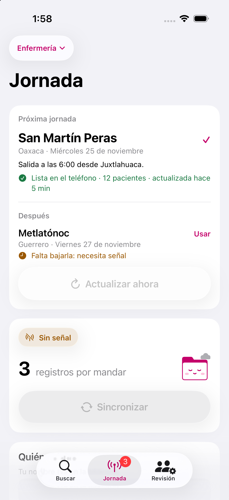
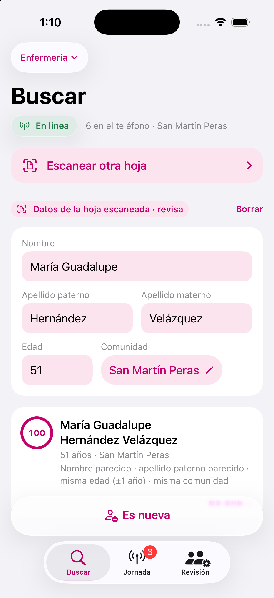
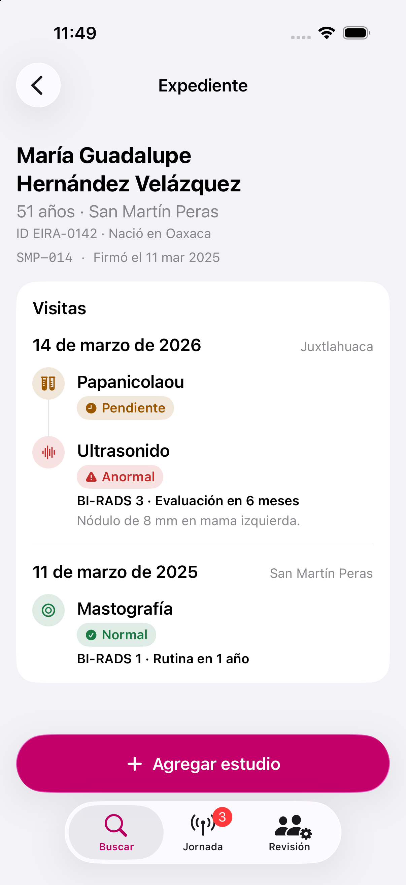
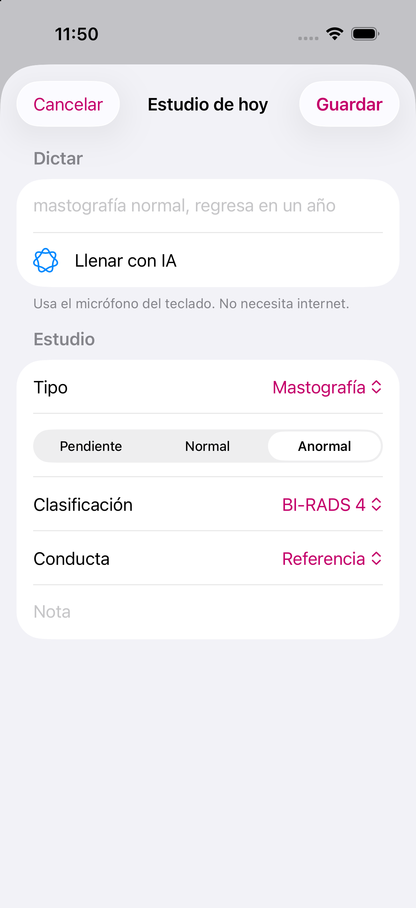

Expediente Rosa
Los expedientes de las pacientes de EIRA: una app para la brigada, que trabaja días sin señal, y un panel web para la oficina.
Reto de EIRA Movimiento Rosa A.C.Nerdearla Vibeathon · CDMX · 21 de noviembre de 2026

Personas ficticias. El problema y las cifras son de EIRA.
En el iPhone, sin señal

1
Escanear hoja
La reconoce aunque venga escrita distinto.

2
Expediente
Solo el médico ve los resultados.

3
Estudio de hoy
La app llena BI-RADS; el médico revisa.

4
Nueva paciente
Sin firma no se guarda.

Expediente Rosa